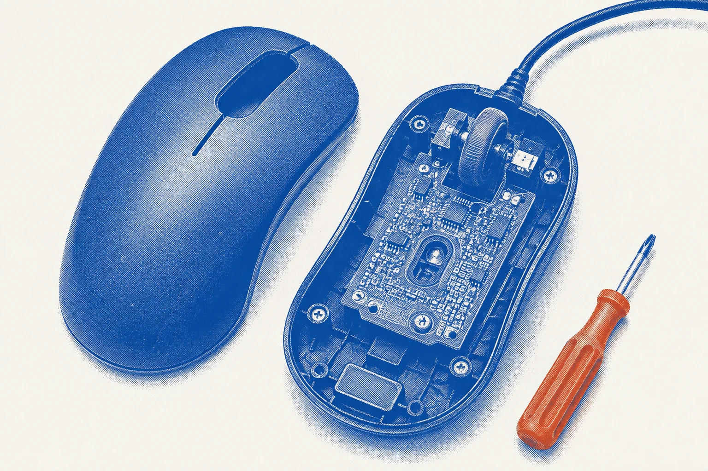

Insidea mouse.
Reachable screws, clips, and replaceable parts make repairs possible.

Replace one component.
A removable shell exposes the parts that wear out. Make the assembly easy to inspect and the fasteners easy to reach. Keep the working parts.